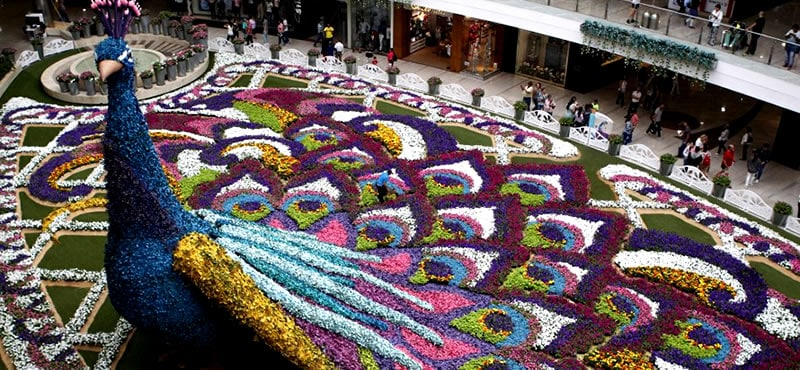
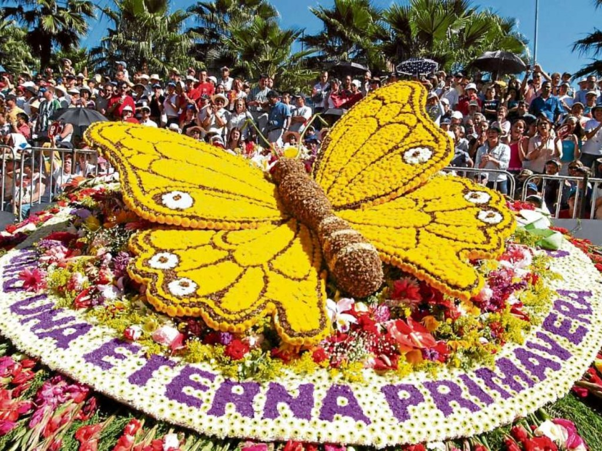

Fiesta Nacional de las Flores
 Medellín, Antioquia, Colombia.
La Feria de las Flores es una de las fiestas más importantes de Colombia y es motivo de orgullo para Medellín. Durante este evento se desarrollan una serie de actividades que resaltan las tradiciones regionales y la convierten en una celebración cultural por experiencia.
Actividades
- Festival de la Trova
- Desfile de silleteros
- Concierto de Juan Luis Guerra
- Desfile de autos clásicos y antiguos
Mayor información
Ver video oficial Programación Desfile de silleteros¿Cómo no perderse nada?
- Descargar la app
- Abrir tienda
- Buscar app
- Instalar app
- Consultar la agenda de eventos
- Identificar los de su interés
Recomendaciones
- Asistir con ropa y calzado cómodos
- Evitar llevar animales a las concertaciones de público
- Llegar con tiempo a los eventos, ya que se tendrán controles de ingreso
- Portar siempre el documento de identificación